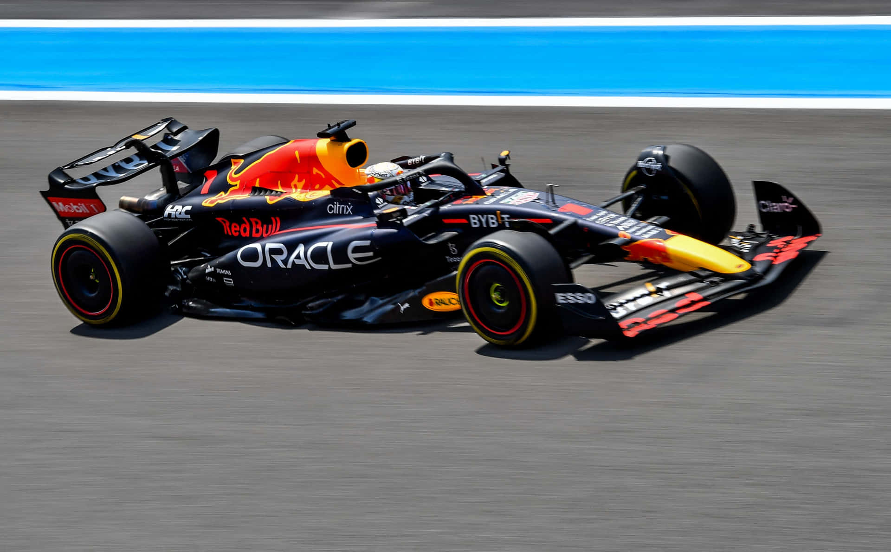
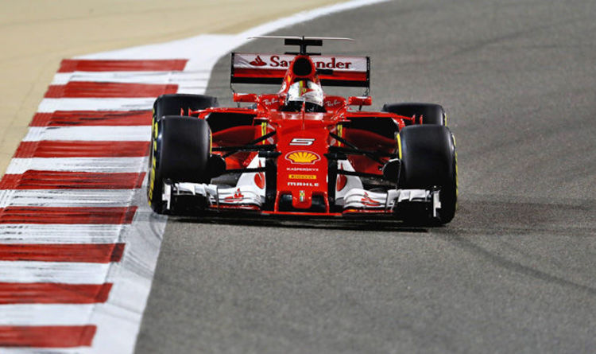

Welcome to the Paddock
The F1 Hub is your primary destination for elite motor racing updates. Our mission is to provide detailed insights into the world of Formula 1. Whether you are a casual viewer or a die-hard fan, we ensure you never miss a slow high-speed moment of the 2024 season!
This site features the latest championship standings, vehicle galleries, and exclusive opportunities to join our community through our newsletter.
Formula 1, Explained for Rookies
Youtube credits: "Cleo Abram"
The Machinery
 